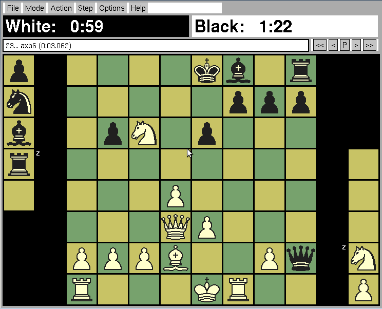
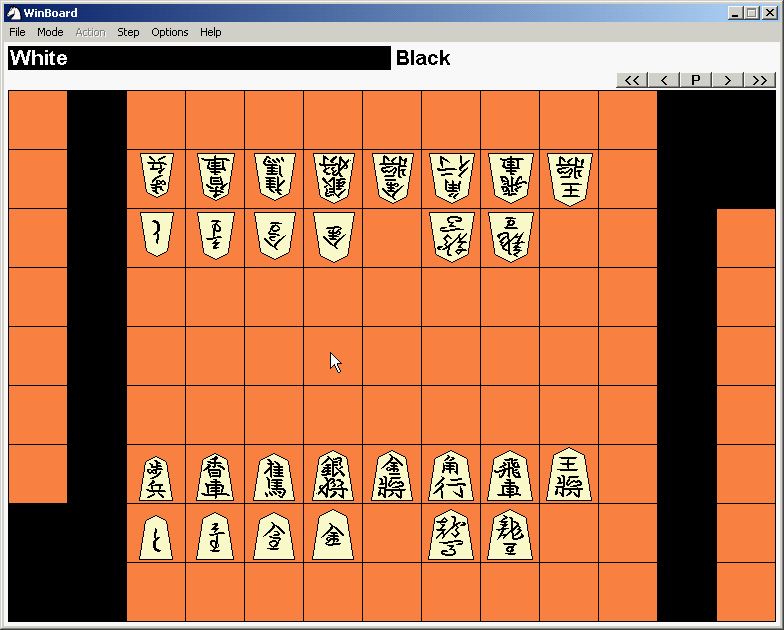
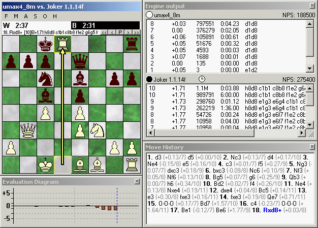

![[screenshot bughouse game]](graphics/xboard-4.4.0-XQ.png)
XBoard is a graphical user interface for chess in all its major forms, including international chess, xiangqi (Chinese chess), shogi (Japanese chess) and Makruk, in addition to many minor variants such as Losers Chess, Crazyhouse, Chess960 and Capabanca Chess. It displays a chessboard on the screen, accepts moves made with the mouse, and loads and saves games in Portable Game Notation (PGN). It serves as a front-end for many different chess services, including:
XBoard runs on Unix and Unix-like systems that use the X Window System.
The project also includes a port to 32-bit Windows systems called WinBoard.
You can find the download section for Winboard at the Winboard Forum.
Development for Winboard, reporting bugs and any other requests can also be done at the same places as for XBoard (see below).
Our next versions will have some major improvements and we are always looking for people who are willing to test those and give us feedback or new ideas. If you are interested, please send an email to our list at <xboard-devel@gnu.org>.
We are also working on merging Winboard and XBoard back into one version using a cross platform GTK-front end. This will help us clean up the code and make things like internationalization easier. Progress is slow though, so if you know want to help out there are lots of things waiting to be done. Email the mailing list for more information.
The current stable version is: 4.4.4
It can be found on the main GNU ftp server: http://ftp.gnu.org/gnu/xboard/ (via http) and ftp://ftp.gnu.org/gnu/xboard/ (via ftp).
It can also be found on one of the mirrors of ftp.gnu.org; please use a mirror if possible.
Precompiled versions are available for openSUSE and debian-squeeze (if you know of other distribution that package it, please let us know).
It would be great if people would like to help in the developing process. We can use all kinds of help, from people who just use the software and have a feature request (send them to developer mailing list), to people who can update/check the documentation and especially people who test development versions (send problems to the developer mailing list).
At the moment we have three developer versions:
After cloning the git-repository, do ./autogen.sh, ./configure and then a make.
Unpack the tar ball and do ./configure followed by make.
For development sources and other information, please see the XBoard project page at savannah.gnu.org.
A snapshot of the latest source code for all branches is available at the git repository on Savannah.
You can also find an archive of old versions on the ftp server.
Documentation for XBoard is available online, as is documentation for most GNU software. You may also find more information about XBoard by running info xboard or man xboard, or by looking at /usr/doc/xboard/, /usr/local/doc/xboard/, or similar directories on your system.
The Chess Engine Communication Protocol can be found here.
These are screenshots taken from version 4.4.0 (click to enlarge).
  
If you have any questions, please check out our FAQ.
XBoard has two mailing lists: <bug-xboard@gnu.org> and <xboard-devel@gnu.org>.
The main discussion list is <xboard-devel@gnu.org>, and is used to discuss most aspects of XBoard, including development and enhancement requests. Please send bug reports to <bug-xboard@gnu.org>.
Announcements about XBoard and most other GNU software are made on <info-gnu@gnu.org>.
To subscribe to these or any GNU mailing lists, please send an empty mail with a Subject: header of just subscribe to the relevant -request list. For example, to subscribe yourself to the GNU announcement list, you would send mail to <info-gnu-request@gnu.org>. Or you can use the mailing list web interface.
A very active forum is the WinBoard Forum (where our current main developer HGM can be found).
If you think you found a bug, please check the bugtracker for open and already closed bugs. If you found a new bug, please, file a bug-report either via our bug-related email list or in the bugtracker.
For feature requests, please use our mailinglist: <xboard-devel@gnu.org>.
Please remember that development of XBoard, and GNU in general, is a volunteer effort, and you also can contribute. For information, please read How to help GNU.